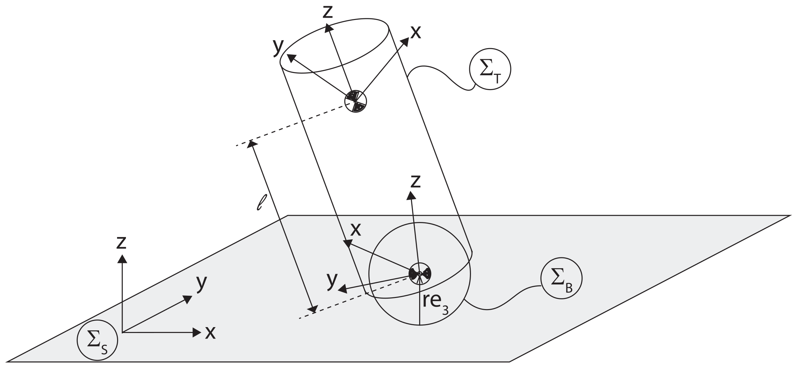

Background
Passive System Theory and Passivity-Based Control (PBC)
Dissipativity
A dynamical system
\[ \Sigma: \quad \begin{cases} \dot{x} &= f(x,u) \\ y &= h(x,u) \end{cases} \quad x \in \mathcal{X} \subset \mathbb{R}^{2n}, \, u \in \mathcal{U} \subset \mathbb{R}^{m} \]
is dissipative with respect to some supply rate \(s\) if there exists a storage function \(\mathcal{H}: \mathcal{X} \to \mathbb{R}^{+}\) such that
\[ \mathcal{H}\left( x(t_1) \right) \leq \mathcal{H}\left( x(t_0) \right) + \int_{t_0}^{t_1} s(u(t), y(t)) \, \text{d}t \]
for all \(x(t_0) = x_0\), all input \(u\), and all \(t_1 \geq t_0\)
Dissipativity
\[ \mathcal{H}\left( x(t_1) \right) \leq \mathcal{H}\left( x(t_0) \right) + \int_{t_0}^{t_1} s(u(t), y(t)) \, \text{d}t \]
This is the dissipation inequality
- Stored energy at \(t_1\) is at most equal to stored energy at \(t_0\), plus externally supplied energy \(s(u,y)\)
- No generation of energy, only internal dissipation
- With \(s(t) \equiv 0\), trajectories tend towards minimum of \(\mathcal{H}\)
Passivity
The system \(\Sigma\) is passive if it is dissipative with the supply rate
\[ s = u^\top y \]
It is output strictly passive if dissipative with the supply rate
\[ s = u^\top y - \delta \lVert y \rVert^2, \; \delta > 0 \]
It is input strictly passive if dissipative with the supply rate
\[ s = u^\top y - \delta \lVert u \rVert^2, \; \delta > 0 \]
Passive System Example

Kirchoff’s law
\[ \begin{aligned} v &= Ri + \frac{1}{C} \int_{0}^{t} i(\tau) \, \text{d}\tau + L \frac{\text{d} i}{\text{d} t} \\ vi - Ri^2 &= \frac{\text{d}}{\text{d} t} \left( \underbrace{\frac{1}{2C} \left( \int_{0}^{t} i(\tau)\, \text{d} \tau \right)^2}_{\mathcal{V}} + \underbrace{\frac{1}{2} Li^2}_{\mathcal{T}} \right) \end{aligned} \]
Let \(\mathcal{H} = \mathcal{V} + \mathcal{T}\), integrate to obtain
\[ \underbrace{\mathcal{H}(t)}_{\textrm{available}} - \underbrace{\mathcal{H}(0)}_{\textrm{initial}} = \underbrace{\int_{0}^{t} v(\tau)i(\tau)\, \text{d} \tau}_{\textrm{supplied}} - \underbrace{\int_{0}^{t} Ri^2(\tau)\, \text{d} \tau}_{\textrm{dissipated}} < \int_{0}^{t} v(\tau) i(\tau) \, \text{d} \tau \]
Stability of Passive Systems
\[ \Sigma: \quad \begin{cases} \dot{x} &= f(x,u), && f(0,0) = 0, \\ y &= h(x,u), && h(0,0) = 0, \end{cases} \]
\(u^{\top} y \geq \dot{\mathcal{H}} = \frac{\partial\mathcal{H}}{\partial x} f(x,u),\quad \mathcal{H} \geq 0,\quad y \equiv 0 \implies x \equiv 0\)
Passivity-Based Control (PBC)
\[ \Sigma_o: \quad \begin{cases} \dot{x} &= f(x) + g(x)u, \\ y &= h(x) \end{cases} \]
Quintessential idea — search for functions \(H_d\) and \(h_d\) such that \(u(x) = u_{es} + u_{di}\) renders the closed-loop system passive
\[ \Sigma_d: \quad \begin{cases} \dot{x} &= f_d(x) + g(x) u_{di}, \quad f_d := f(x) + g(x) u_{es}(x) \\ y_d &= h_d(x) \end{cases} \]
with \(\dot{H}_d \leq y_d^\top u_{di}\)
PBC Example - Simple Pendulum
PBC Example - Simple Pendulum

